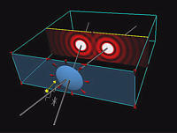
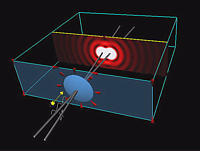
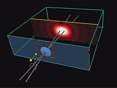

Quick time movies of the Fraunhofer Diffraction TOP module
Note: Click on the thumbnails to see the 640x480 resolution movies.
|  |
Rayleigh resolution criterion, change of angle between the sources.
|
|  |
Rayleigh resolution criterion, change of diameter of the lens.
|
|  |
Rayleigh resolution criterion, change of wavelength. Click here to see the 320x200 version. |

Created
by Srihari Angaluri and Kiril Vidimce
Send comments to comments@webtop.org